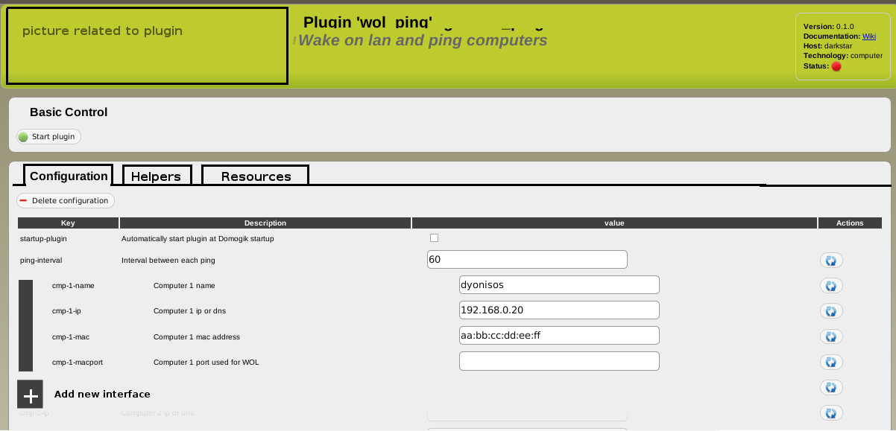

Like for rooms, the header could have a (fixed by the plugin) background image that should represent the plugin.
A plugin gives no picture with it (because a plugin has no UI part), so the UI will take the picture in a dedicated folder and find it with name “foo.png” if the plugin is named “foo”.
Configuration (DONE in 0.1.0!) ============================!==
